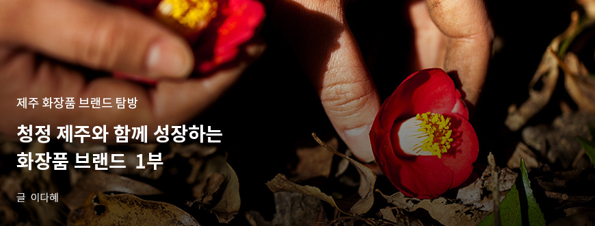
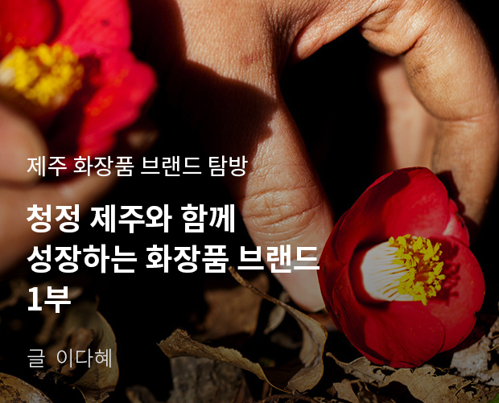
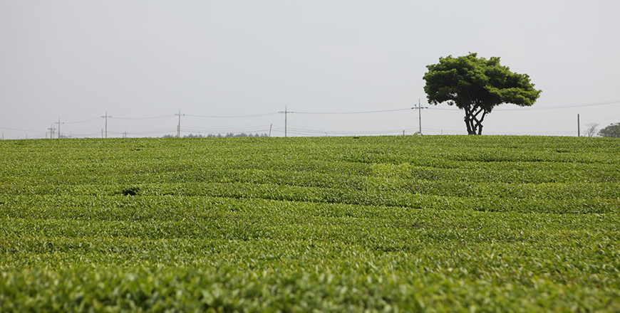
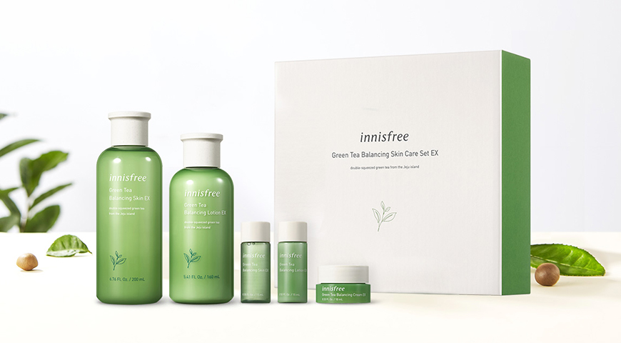
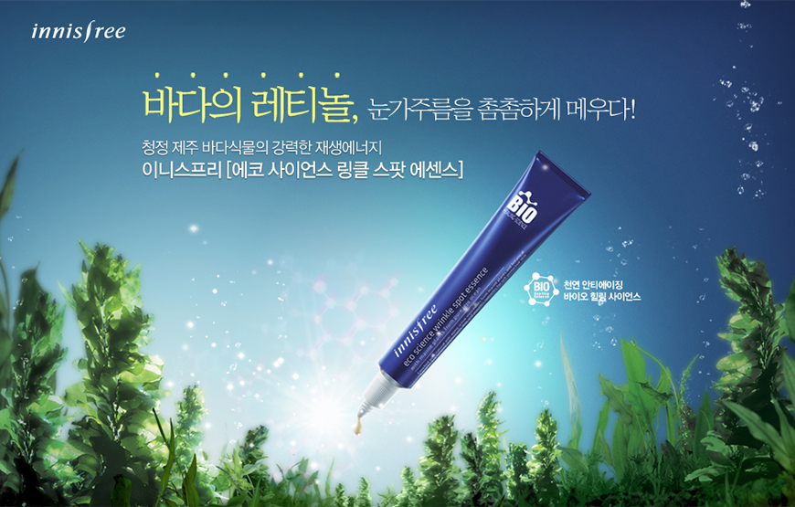
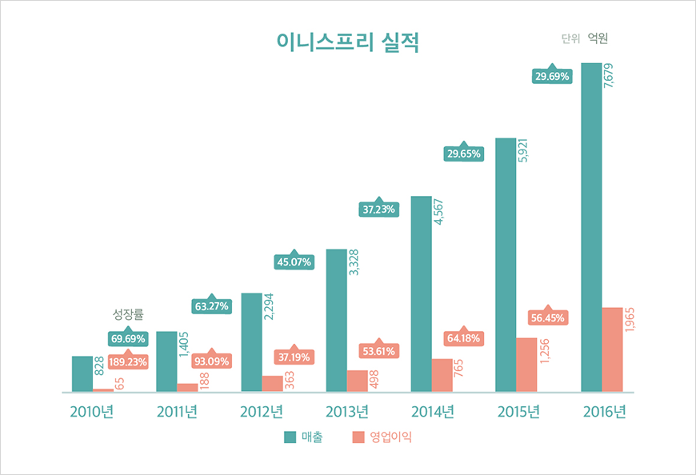
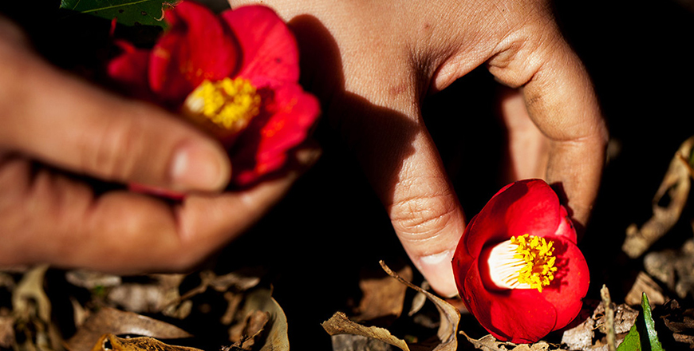
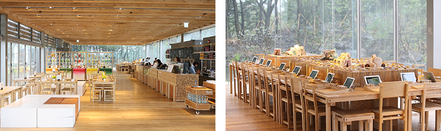
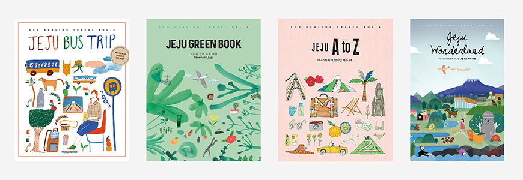

기획취재콘텐츠
- Home
- 제주라이프
- 기획취재콘텐츠
청정 제주와 함께 성장하는 화장품 브랜드 1부새로운 글



화장품 원료의 보고로 제주가 주목받으며 제주산 화장품에 대한 관심은 어느 때보다 뜨겁다. 이니스프리, 비욘드 등 기존 대기업 화장품 브랜드는 앞다퉈 제주 원료를 활용한 제품을 출시했다. 제주에서 탄생한 메이드 인 제주 화장품 브랜드도 선전 중이다. 제주 쪽을 활용한 제주 ‘인디’, 제주 에키네시아, 섬오갈피 등 다양한 제주 식물성 원료를 활용해 기초 라인을 선보이는 브랜드 ‘아꼬제’ 등 제주산 원료를 적극적으로 활용하고 브랜드 스토리텔링과 결합해 제주를 방문하는 여행객은 물론 국내외 소비자에게 브랜드를 알리며 그 입지를 확대하고 있다. 제주 화장품 원료에 대한 관심이 증가하자 국내 대표 화장품 ODM 업체가 제주에 진출하기도 했다. 계속해서 원료를 발굴 및 개발하고 제주 이미지로 무장한 제품을 생산할 수 있는 ODM 업체의 선전은 제주 화장품 원료 산업은 물론 제주 화장품 산업 성장의 발판을 마련하고 있다.
제주 자연의 가치를 드러내다. 자연주의 화장품 브랜드, 이니스프리
자연주의 화장품 브랜드 이니스프리와 제주의 인연은 수십 년 전으로 거슬러 올라간다. 아모레퍼시픽 창업주, 고 서성환 선대 회장은
“우리나라 고유의 차 문화를 되살리겠다.”는 집념으로 차 재배에 최적지인 제주에 녹차 밭을 일궜다.

- 서광다원 녹차 밭 풍경 ⓒ이니스프리 -
아모레퍼시픽이 일군 녹차 밭에서 자란 녹차는 바르는 차로 거듭났다. 수십 년 간 녹차를 연구해 화장품 원료로서 기능을 발견, 이를 활용해 화장품을 만든 것이다. 국내 최초 자연주의 화장품 브랜드로 시작한 이니스프리는 제주 녹차를 활용한 ‘그린티 밸런싱 라인’을 히트시키며 명실상부 국내 대표 화장품 브랜드로 성장했다.

- 이니스프리 그린티 밸런싱 스킨 케어 세트 ⓒ이니스프리 -
‘그린티 밸런싱 라인’을 시작으로 이니스프리에서는 화산송이, 한란, 비자, 동백, 유채꿀, 왕벚꽃, 한라봉 등 총 15가지 제주 원료를 활용한 화장품을 선보였다. 이니스프리에서 제주산 자연 원료를 활용해 제품을 출시할 때마다 해당 원료에 대한 관심도 높아졌다. 제주 한란, 비자, 동백, 화산송이, 용암해수 등 이미 제주에 있었지만, 대중적 인지도가 높지 않았던 자연 자원의 효능과 아름다움이 이니스프리 브랜드와 함께 대중에게 전달됐다. 제주 섬이 가진 독특한 자연적 특성에 주목해 문헌 연구를 토대로 피부에 효능 있는 원료를 발굴하고, 육지와 차별화된 가치와 원료 스토리를 개발하는 노력이 있었기 때문이다.

- 이니스프리 에코 사이언스 링클 스팟 에센스 광고 캠페인 ⓒ이니스프리 -
고래가 새끼를 낳으면 미역을 먹는다는 문헌 스토리를 기반으로 제주 미역의 효능을 소개한 사례가 있습니다. 주름 개선 기능성 제품인 링클 스팟 에센스의 핵심 원료, 제주 청정 바다의 참미역과 모자반 추출물의 재생에너지를 효과적으로 전달하는 방법으로, ‘고래가 새끼를 낳으면, 그 해는 미역이 흉년이라는 말이 있다.’는 스토리를 접목해 바다 식물이 지닌 재생력과 정화 기능을 강화한 스토리텔링을 캠페인에 접목한 것이죠.
- 이니스프리 모음재단 한찬호 사무국장 -


이니스프리 실적
| 구분 | 2010년 | 2010년 | 2012년 | 2013년 | 2014년 | 2015년 | 2016년 |
|---|---|---|---|---|---|---|---|
| 매출(성장률) | 828 | 1,405(69.69%) | 2,294(63.27%) | 3,328(45.07%) | 4,567(37.23%) | 5,921(29.65%) | 7,679(29.69%) |
| 영업이익(성장률) | 65 | 188(189.23%) | 363(93.09%) | 498(37.19%) | 765(53.61%) | 1,256(64.18%) | 1,965(56.45%) |

이니스프리는 2012년 중국 상해에 첫 매장을 오픈하며 중국 시장에 진출했다. 제주 청정 원료와 중국인이 선호하는 여행지인 제주의 이미지가 결합하며 중국 ‘요커’의 마음을 사로잡았다. 중국 시장에 진출한 해인 2012년 이니스프리 매출은 2천 294억, 영업이익은 363억 원으로 전년 대비 각각 63%, 93% 성장했으며, 이후에도 매출은 년 30%, 영업이익은 년 50% 이상 상승세를 이어갔다.
이니스프리는 제주 원료를 활용하고 스토리를 덧입힌 제품을 출시하고 판매하는 것에서 활동을 멈추지 않는다. 제주 지역이 가진 가치를 전하며 지역 경제 활성화에 기여하기 위한 다양한 활동을 병행하고 있다.
이니스프리는 ‘아리따운 구매’라는 이름 아래 제주의 각 마을과 협업하고 있습니다. ‘아리따운 구매’는 원료를 선택하고 구매하는 과정에서 원료 안전성, 환경 보전, 지역사회 공헌이라는 3대 원칙을 준수해 환경과 사회에 긍정적으로 기여하는 것을 목적으로 하는 아모레퍼시픽 고유의 공정거래 활동입니다.
- 이니스프리 모음재단 한찬호 사무국장 -

- 동백마을 ⓒ이니스프리 -
이니스프리 카멜리아 라인은 제주도 서귀포시 남원읍 신흥2리 ‘동백마을’에서 채집한 동백꽃 꽃잎을 직접 구매한다. 또한, 제주시 구좌읍의 송당마을에서 구매한 비자 열매는 이니스프리 비자 제품 라인에 활용된다. 이니스프리와 제주 지역의 공정거래 문화는 기업 입장에서는 지역 사회의 안전한 원료를 구매하며 재배, 가공, 운반 전 과정에서 환경에 미치는 영향을 최소화하며, 지역 입장에서는 안정적이고 지속해서 원료를 판매할 수 있다는 이점이 있다.

- 서광다원 이니스프리 제주 하우스 내부 ⓒ이니스프리 -
서광다원에 있는 이니스프리 제주하우스에는 제주 녹차를 맛보고 즐길 수 있는 문화공간으로 제주 관광객의 발길을 이끌고 있다. 제주 녹차를 활용한 차와 디저트를 선보이며, 제주 원료를 활용한 향 제품을 체험할 수도 있다. 또한, 제주에서만 구매 가능한 이니스프리 제품 라인을 구비하고 제주 자연의 아름다움을 담은 라이프스타일 제품을 판매한다. 여기에 매년 이니스프리와 함께한 다양한 제주의 아름다움을 소개하는 여행 가이드북 ‘제주 에코 힐링 트래블 북’을 발행한다. 제주 자연의 소중함과 아름다움을 전하는 <제주 로그북> 시리즈에서는 곶자왈의 신비로운 모습과 숲을 보호하기 위한 다양한 노력을 소개하기도 했다.

- 이니스프리 제주 플레이북 2015년 ~ 2018년 ⓒ이니스프리 -
브랜드 체험관 ‘제주하우스’ 또한 제주도에서 손꼽히는 친환경 건축물로 평가받을 뿐만 아니라 대표적인 관광 명소 중 하나가 되었습니다. 도심 속 이니스프리 매장이 자연과 소통하는 작은 창구라면 제주하우스는 본격적으로 자연과 소통하는 장이라고 할 수 있습니다. 브랜드와 여행 및 문화를 연계한 여러 콘텐츠가 제주와 이니스프리 사이 보이지 않는 연결고리를 더 분명하고 끈끈하게 만들어 준다고 생각합니다.
- 이니스프리 모음재단 한찬호 사무국장 -
- 중동 플래그십 스토어 ⓒ이니스프리 -
2020년 3월 기준, 이니스프리는 한국을 포함해 전 세계 17개 국가에서 제주산 원료를 활용한 다양한 화장품 라인을 선보이고 있다. 2020년 2월에는 아랍에미리트 두바이몰에 이니스프리 중동 첫 플래그십 스토어를 오픈했다. 매장은 제주 자연에서 얻은 영감과 제주 헤리티지를 살린 천연 원료를 모티브로 꾸며 제주와 이니스프리의 연결성을 강화했다.
중동 플래그십 스토어를 방문한 고객들은 제주를 비롯한 이니스프리의 자연주의 스토리에 큰 흥미를 보입니다. 제주의 아름다운 자연이 연상되는 공간 디자인은 이니스프리 브랜드 슬로건인 ‘Natural benefits from JEJU’를 한층 더 깊게 경험할 수 있다고 말합니다.
- 이니스프리 모음재단 한찬호 사무국장 -
오랜 시간 견고하게 쌓아온 이니스프리와 제주의 연결은 브랜드와 지역이 어떻게 상생할 수 있는가에 대한 질문에 실천적인 방식으로 보여주고 있다.
이전글